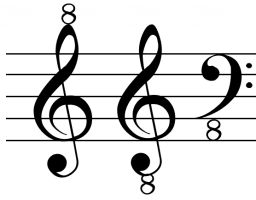

In order to explain this concept here’s an example. Guitar in standard tuning has the following open string notes (from thickest to thinnest):
E2, A2, D3, G3, B3, E4.
Bass guitar in standard tuning has the same first four notes only one octave lower:
E1, A1, D2, G2.
On master piano one can go even lower. The clefs that are used to notate these instruments are usually treble and bass clefs, but in order for us to reach and notate these lower octave ranges we can use either:
1. More than five ledger lines to extend the staff until we reach the desired pitches (this is not common practice and it’s generally avoided).
2. A modified treble or bass clef with written numeral ‘8’ below or above it.
This numeral 8 (sometimes called “octave marker”) when written below the clef indicates that the pitches on the staff should sound an octave below their default value; and when it’s written right above the clef it indicates that the pitches on the staff should sound an octave above their original pitch value.

Figure 2.7. Treble and bass clefs with octave markers
F-clef can also be notated with an octave maker below or above the clef, but both of these are extremely rare. Usually vocal and instrument performers whose ranges lie below the bass clef simply memorize the number of ledger lines for each note through common use. If on the other spectrum a note is significantly higher than the range of a bass clef, the composer will simply write it in treble clef.
It should be said that performers will normally know the right octave range to use even without the octave markers. However, lately as musical notation software started to become popular the use of octave-marked clefs has increased. This is because in any score-writing software the proper use of clef octave marker ensures that the music files (most commonly MIDI files) produce tones in their correct octaves.